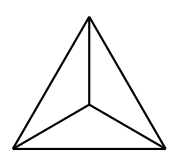

Neste material vamos aprender novas técnicas relacionadas a problemas de contagem.
Seção1.2.1Separando em casos
Quando encontramos dificuldades em resolver um problema, uma estratégia útil é separá-lo em casos menores em que essas dificuldades diminuam. Essa ideia é tão significativa que os especialistas da ciência da computação nomearam-na de divide and conquer algorithm, em analogia às estratégias político-militares.
Exemplo1.2.1.
O alfabeto da Tanzunlândia é formado por apenas três letras: A, B e C. Uma palavra na Tanzunlândia é uma sequência com no máximo 4 letras. Quantas palavras existem neste país?
Existem 3 palavras com uma letra, \(3^2\) com duas letras, \(3^3\) com três letras, e \(3^4\) com quatro letras. Logo, o total de palavras é \(3 + 3^2 + 3^3 + 3^4 = 120\text{.}\)
Exemplo1.2.2.
De quantos modos podemos pintar (usando uma de quatro cores) as casas da figura abaixo de modo que as casas vizinhas tenham cores diferentes?
Se as casas 1 e 3 tiverem a mesma cor, temos quatro maneiras de escolher essa cor. Podemos escolher a cor da casa 2 de três maneiras (basta não ser a cor usada nas casas 1 e 3), o mesmo vale para a casa 4. Logo, temos \(4 \times 3 \times 3 = 36\) maneiras de pintar dessa forma.
Agora, se 1 e 3 têm cores diferentes, podemos escolher a cor da casa 1 de quatro maneiras, da casa 3 de três maneiras e, das casas 2 e 4, podemos escolher de duas maneiras cada. Assim, temos \(4 \times 3 \times 2 \times 2 = 48\) maneiras de pintar desta outra forma.
Desse modo, podemos concluir que existem \(36 + 48 = 84\) maneiras de pintar a rosquinha.
Exemplo1.2.4.
Quantos são os números de quatro dígitos que não possuem dois algarismos consecutivos com a mesma paridade?
Quando o primeiro algarismo for par, temos 4 possibilidades para o primeiro dígito, 5 para o segundo, 5 para o terceiro e 5 para o último. Totalizando \(4 \times 5 \times 5 \times 5 = 500\) números.
Quando o primeiro algarismo for ímpar, temos 5 possibilidades para cada um dos dígitos. Logo, a quantidade de números dessa forma é \(5 \times 5 \times 5 \times 5 = 625\text{.}\)
Portanto, temos um total de \(625 + 500 = 1125\) números de quatro dígitos que não possuem dois algarismos consecutivos com a mesma paridade.
Seção1.2.2Contagens Múltiplas
Os problemas que abordamos até agora tinham algo em comum: o papel da ordenação na diferenciação das possibilidades. Porém, há casos em que a ordem dos elementos não é relevante para a contagem. Isso fica claro quando analisamos as seguintes situações:
Situação 1. De um grupo de 7 pessoas, devemos escolher 3 delas para formar um pódio (primeiro, segundo e terceiro lugares). De quantas formas podemos fazer isso?
Situação 2. De um grupo de 7 pessoas, devemos escolher 3 delas para formar um comitê (sem hierarquias). De quantas formas podemos fazer isso?
Perceba que, apesar de serem semelhantes, são problemas diferentes, com respostas também diferentes. O primeiro sabemos resolver. A resposta é \(7 \times 6 \times 5 = 210\text{.}\) Agora, sabendo essa resposta, podemos dar uma solução para o segundo problema. Note que, para cada comitê formado, podemos montar \(3 \times 2 \times 1 = 6\) pódios distintos. Logo, o número de pódios é seis vezes o número de comitês. Portanto, a resposta para o segundo problema é \(\frac{210}{6} = 35\text{.}\)
Podemos usar essa estratégia para resolver problemas de anagramas em que as palavras possuem letras repetidas.
Exemplo1.2.1.
Quantos anagramas possui a palavra matematica (desconsidere o acento)?
Se imaginarmos por um momento uma palavra de 10 letras diferentes:
\begin{equation*}
m_1 a_1 t_1 e m_2 a_2 t_2 i c a_3
\end{equation*}
o número total de anagramas será \(10!\text{.}\) Porém, ao trocarmos letras que na realidade são iguais (como \(a_1\) e \(a_3\)) o anagrama continua o mesmo. Dessa forma, cada anagrama foi contado \(2! \times 2! \times 3!\) vezes. Portanto, a resposta é \(\frac{10!}{2! \times 2! \times 3!}\text{.}\)
Exemplo1.2.2.
De quantas formas podemos pôr oito pessoas em uma fila se Alice e Bob devem estar juntos, e Carol deve estar em algum lugar atrás de Daniel?
Vamos imaginar Alice e Bob como uma única pessoa. Existirão \(7! = 5040\) possibilidades. Alice pode estar na frente de Bob ou vice versa. Então devemos multiplicar o número de possibilidades por 2. Por outro lado, Carol está atrás de Daniel em exatamente metade dessas permutações, então a resposta é apenas \(5040\text{.}\)
Exercícios1.2.3Problemas Propostos
1.
Escrevem-se todos os inteiros de 1 a 9999. Quantos números têm pelo menos um zero?
Ache a quantidade de números de 0 a 9999 sem nenhum dígito zero. Faça essa contagem separando em quatro casos (de acordo com a quantidade de algarismos).
2.
Quantos números de três dígitos possuem todos os seus algarismos com a mesma paridade?
Separe em dois casos: 1) quando todos os dígitos são pares; 2) quando todos os dígitos são ímpares. Não se esqueça que zero não pode ser o primeiro dígito!
3.
Quantos são os números de quatro algarismos que possuem pelo menos um dígito repetido?
4.
Quantos são os números de quatro dígitos distintos que não possuem dois algarismos consecutivos com a mesma paridade?
5.
De quantas maneiras podemos colocar um rei preto e um rei branco em um tabuleiro de xadrez (\(8 \times 8\)) sem que nenhum deles ataque o outro?
Podemos dividir o tabuleiro em três regiões: A primeira é formada pelas quatro casas nos cantos do tabuleiro; a segunda pelas 24 casas da borda (que não estão nos cantos); e a terceira pelo tabuleiro \(6 \times 6\) no interior do tabuleiro. Se o primeiro rei for posto na primeira região, temos 60 maneiras de colocar o segundo rei; se ele for posto na segunda, temos 58 maneiras; e se for posto na terceira, temos 55 maneiras. Logo, temos um total de \(4 \times 60 + 24 \times 58 + 36 \times 55 = 3612\) modos diferentes de colocar os dois reis.
6.
Quantos são os naturais pares que se escrevem com três algarismos distintos?
7.
Na cidade Gótica as placas das motos consistem de três letras. A primeira letra deve estar no conjunto \(\{C, H, L, P, R\}\text{,}\) a segunda letra no conjunto \(\{A, I, O\}\text{,}\) e a terceira letra no conjunto \(\{D, M, N, T\}\text{.}\) Certo dia, decidiu-se aumentar o número de placas usando duas novas letras J e K. O intendente dos transportes ordenou que as novas letras fossem postas em conjuntos diferentes. Determine com qual opção podemos obter o maior número de placas.
Inicialmente temos \(5 \cdot 3 \cdot 4 = 60\) placas. De acordo com o problema, temos as seguintes opções para o novo número de placas: \(6 \cdot 3 \cdot 5 = 90\) ou \(5 \cdot 4 \cdot 5 = 100\text{.}\) Logo, o número máximo é 100.
8.
(Maio 1998) Cada um dos seis segmentos da figura abaixo deve ser pintado de uma de quatro cores de modo que segmentos vizinhos não tenham a mesma cor. De quantas maneiras podemos fazer isso?

Figura1.2.3.
9.
Em uma festa havia 6 homens e 4 mulheres. De quantos modos podemos formar 3 pares com essas pessoas?
(AIME 1996) Duas casas de um tabuleiro \(7 \times 7\) são pintadas de amarelo e as outras são pintadas de verde. Duas pinturas são ditas equivalentes se uma é obtida a partir de uma rotação aplicada no plano do tabuleiro. Quantas pinturas inequivalentes existem?
Separe o problema em dois casos. Quando as casas amarelas são simétricas em relação ao centro do tabuleiro e quando não são. Conte o número de pinturas equivalentes em cada caso.
12.
Em uma sala de aula existem \(a\) meninas e \(b\) meninos. De quantas formas eles podem ficar em uma fila, se as meninas devem ficar em ordem crescente de peso, e os meninos também? (Suponha que 2 pessoas quaisquer não tenham o mesmo peso.)
Temos \((a+b)!\) maneiras de permutar todas as crianças. Porém apenas uma das \(a!\) permutações das meninas está na ordem correta e apenas \(b!\) das permutações dos meninos está correta. Logo, a resposta é \(\frac{(a+b)!}{a!b!}\text{.}\)
13.
Considere um torneio de xadrez com 10 participantes. Na primeira rodada cada participante joga somente uma vez, de modo que há 5 jogos realizados simultaneamente. De quantas maneiras esta primeira rodada pode ser realizada?
14.
Doze cavaleiros estão sentados em torno de uma mesa redonda. Cada um dos 12 cavaleiros considera seus dois vizinhos como rivais. Deseja-se formar um grupo de 5 cavaleiros para salvar uma princesa. Nesse grupo não poderá haver cavaleiros rivais. Determine de quantas maneiras é possível escolher esse grupo.